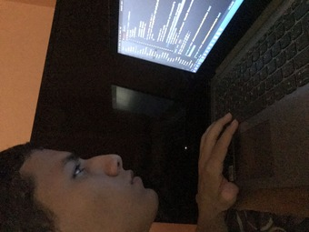
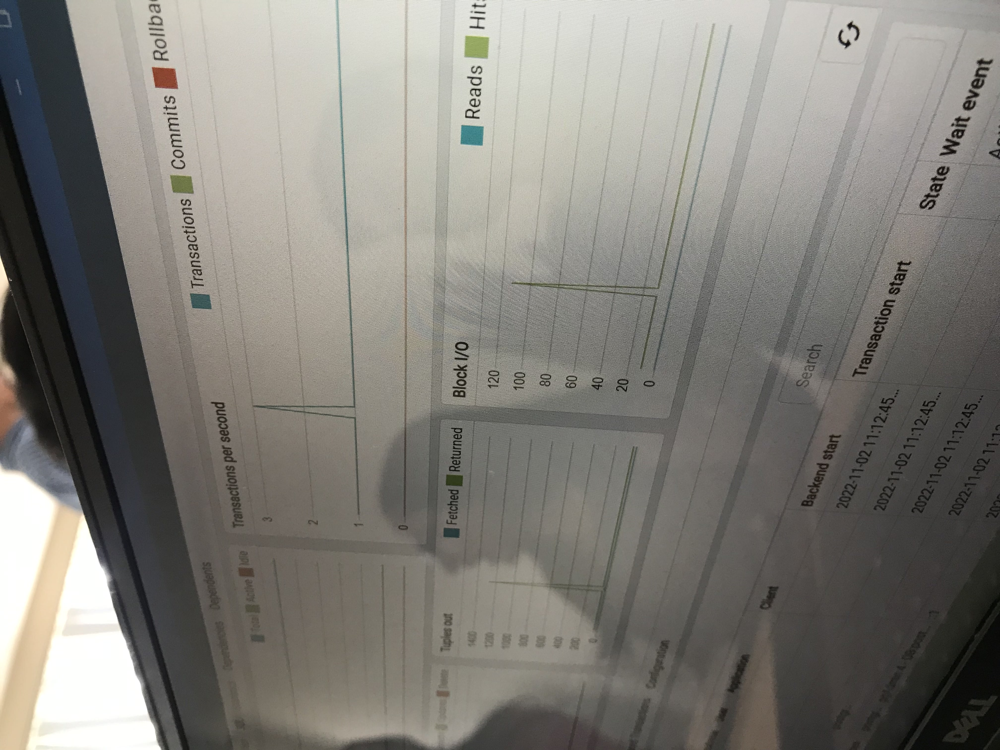
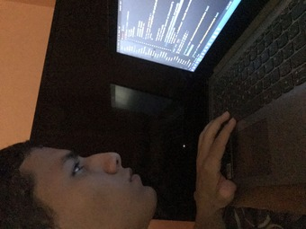
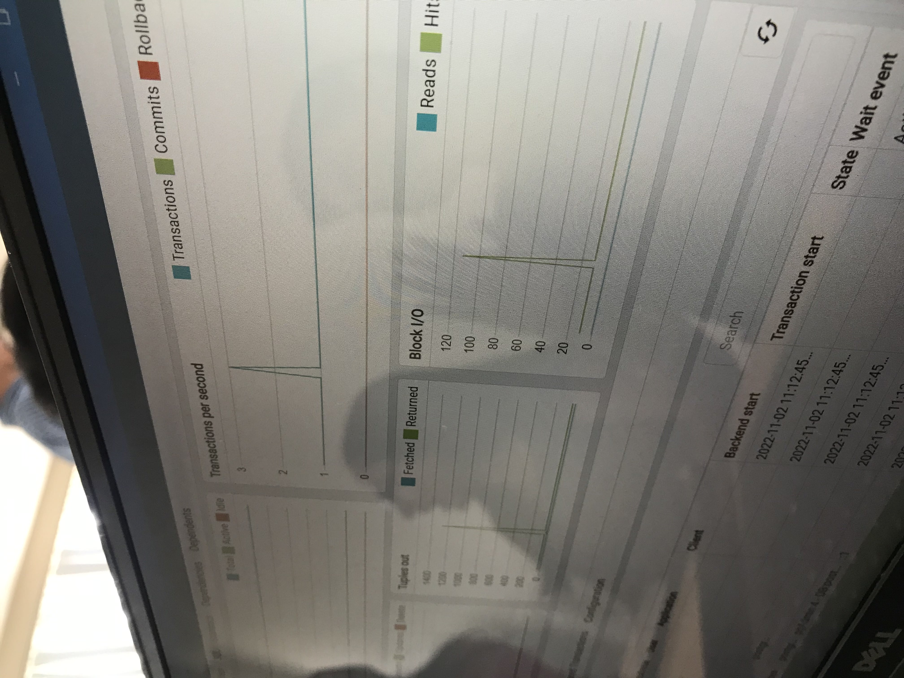

Estudiante de Ingeniería en sistemas, Desarrollador Web, hablo 2 idiomas, y escribo cosas. El 5 de junio de 2021 inicio la carrera de Ingeniería en sistemas, en el proceso desarrollé proyectos indivuales, duales y colectivos.
En el inicio del periodo académico en conjunto con @Johao Castillo desarrollamos un sistema hospitalario que agenda citas, almacena pacientes, recetas y muestra los datos del paciente, dicho proyecto nos tomó una semana de desarrollo considerando que ya teníamos experiencia previa en programación.
En conjunto con mi grupo de trabajo el cual era coordinador, desarrollamos aplicaciones web y de consola como Algoritmo de árboles binarios y un e-commerce del lado del cliente con @Ernesto Serrano. El 2 de noviembre de 2021 inicio mi carrera de Desarrollo Web a través de educación en línea en Platzi en el que realicé proyectos como Landing Page y Token presentation cards.
 

Después de un largo año de universidad, práctica con proyectos de terceros y adquirir cierto grado de experiencia, inicie proyectos propios que me permitieron mejorar mis habilidades en programación
El 12 de Febrero de 2023 inicié el proyecto Banco Nacional, un landing page de servicios financieros que simula un login y un dashboard que reporta ingresos / egresos mensuales, tarjetas de credito y pago de servicios básicos.
Dicho proyecto fue el principio de una serie de proyectos disponibles en mi lista de Proyectos que he desarrollado a lo largo de mi carrera hasta la actualidad.